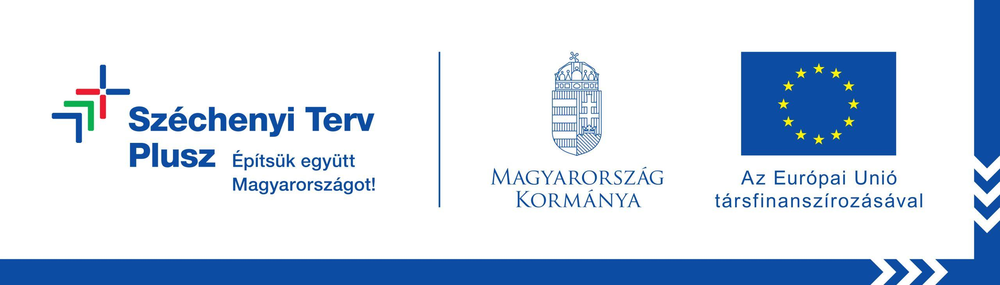

Kulisszák mögött
Galéria
Pillanatok laborunk mindennapjaiból – a digitális tervezéstől és gyártástól a kézi készrevitelig és a minőségellenőrzésig.
A precizitás sok, egymásra épülő munkafázisból születik.
41 pillanat a laborunkból
Pillanatok laborunk mindennapjaiból – a digitális tervezéstől és gyártástól a kézi készrevitelig és a minőségellenőrzésig.
41 pillanat a laborunkból
